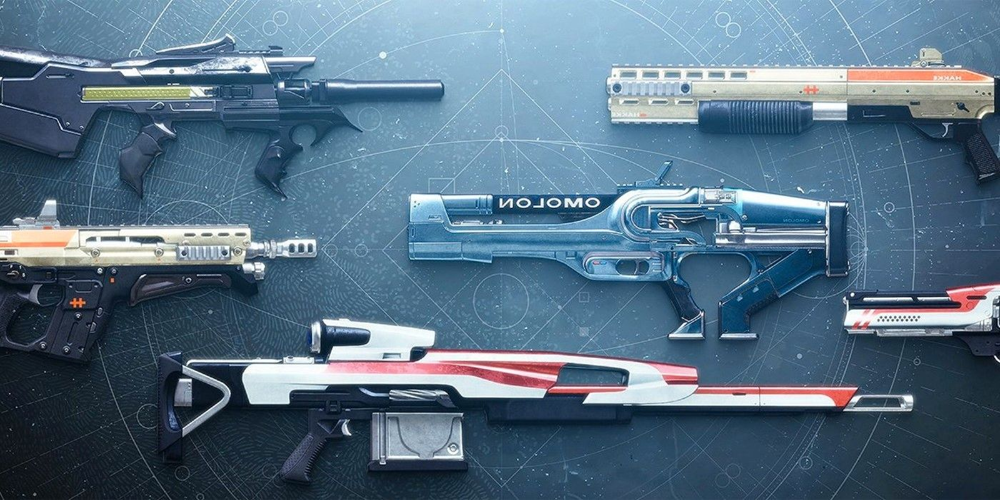

Weapons
Within the Destiny 2 universe, there are multiple different kinds of weapons you can acquire and use. Each weapon fits into one of three inventory slots according to its type: primary, special, and heavy. A player can equip one weapon of each slot and hold up to nine more of each slot in their inventory. Players can equip any weapon in their inventory at any time, but changing the equipped Special or Heavy weapon will forfeit half the weapon's ammo in PvE and all of the weapon's ammo in PvP.
Primary Weapons
Primary weapons are the main weapons used by Guardians. There are four different types of primary weapons:
Scout Rifles: Semi-automatic rifles with high accuracy.
Pulse Rifles: Burst-fire rifles designed for medium-range.
Auto Rifles: Fully-automatic rifles with high recoil.
Hand Cannons: Revolver handguns with the range varying from short-long and high impact.
Primary weapons have unlimited ammunition. In some rare cases, primary weapons may require special ammo (i.e. primary grenade launchers, snipers, shotguns).
Special Weapons
Special weapons deal higher amounts of damage, but they are less "all-purpose" and useful mainly in specific circumstances. There are four types of special weapons:
Shotguns: Close-quarters, but high damage.
Sidearms: Pistols with a high fire rate, but low range and impact.
Sniper Rifles: Long-range scope and high damage.
Fusion Rifles: Close- to mid-range directed-energy rifles that have charge cycles
Special weapon ammo can be replenished by picking up small, green ammo boxes.
Heavy Weapons
Heavy weapons deal massive amounts of damage in a short amount of time. There are four types of heavy weapons:
Machine Guns: High rate of fire and extreme magazine capacity, deals a high amount of damage.
Rocket Launchers: Deals massive damage to a large radius.
Swords: Deals massive damage to a single target and can also be used to block damage.
Grenade Launchers: Deals massive damage to a medium-to-large radius.
Heavy weapon ammo can be replenished by picking up large, purple boxes or opening purple ammo crates.
Light
A weapon's Light is represented by a number and factors into a player's overall Light level. The higher a weapon's Light is, the more damage it will do to enemies. In regular Crucible modes, weapons' Light levels do not affect damage output. However, Light is a factor in playlists with Level Advantages enabled, such as Iron Banner and Trials of Osiris.
Damage Type
There are five different damage types that a weapon may possess: kinetic, arc, solar, stasis, or void. Damage types can inflict additional damage to an enemy's shields. The color of an enemy's shield represents which damage type it is vulnerable to. Any unique damage types that are not used against their respective shields will only inflict the default damage of the weapon. A damage type will do additional damage to all enemies if the corresponding Burn modifier is active.